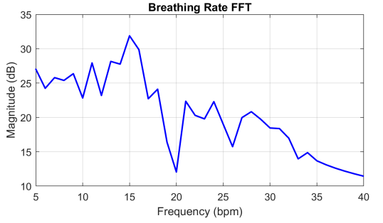

About Me
I'm a newly graduated Electrical Engineer from the University of Michigan, exiting university with a 4.0 GPA
and a wide array of experiences, skills, and knowledge. My primary focus is/was embedded systems. Anything MCU's,
digital communication, bare metal circuits and firmware, and/or low level software is where I live comfortably.
However, I've done a lot more than just that including some other substantial projects. Musical/audio equipment is
what originally drew me towards my major, and so I'm also comfortable with signal processing and classic analog circuitry.
On the more digital side of things, I went so far as to take our penultimate computer architecture class, learning how a modern
CPU core functions and helping architect one as part of a team using system Verilog. I originally intended to do math or physics
in school, so I also spent some time in electromagnetics and wireless link design as a way to satisfy my mathematical inclinations,
atop doing a math minor. I am by no means a particularly talented mechanical engineer, but I am proficient with AutoCAD out of necessity,
as some physical design was needed for a few of my projects.
I'm currently looking for employment, ideally within the embedded systems industry. I want to find something that provides
meaningful and challenging work, that will feel like a natural extension of my education rather than a departure or step back from it.
On top of this I plan on exploring some of my own endeavors/projects, with applications in action sports, sound equipment, and automotive.
More than anything, I'd like to keep learning and growing as an engineer and creator, and find the right places and
people to help me do that.
📄 Download My Resume
Work Experience
Hendrickson International
During the summer of 2024, I did an internship with the electronic controls business unit (ECBU) of Hendrickson, located in Canton, OH.
This was a bit of a departure from what I was used to, as I was much more a validation engineer than anyting else. I learned how important
the testing process is in industry. Hendrickson was/is launching a tire pressure/bearing health sensor suite for commercial trailers that interfaces with their other products.
They had some fun embedded stuff to play with, as these sensors had an ASIC on board for bearing health detection and interfaced with a
base station via BLE. I spent a lot of time testing these features, as well as doing some CAN validation with custom packets. For this I
got acquainted with the CAN protocol and Vector CAN tools. I wrote a C-like CAPL script to send CAN packets and make sure that the correct
response was recorded from third party devices. I helped with manufacturing, creating a comparator based test circuit for batteries in
the assembly process. I also did some algorithm validation using simulink and test data sets to make sure that the firmware was logically sound.
Japanese Auto Repair
Before I had the good fortune of landing an internship, I went to work for my father at the family business, an auto repair shop, in the summer of 2023.
Though it was not particularly supplemental to my desired career, it was a formative experience no less. Getting more comfortable with tools, hand-on work,
and even seeing some industry engineering standards up close on a daily basis helped supply me with a lot of extracurricular skills that have been arguably
even more useful to me so far. It was another feather in the cap of a complete and holistic problem solving mindset. Also, some repairs involving CAN/ECU faults
pose some issues very familiar to an embedded engineer, some problems I plan on further exploring with my father while searching for employment.
Academic Experience
Embedded Systems
The undergraduate embedded systems sequence was both my favorite experience and crowning achievement in college. We built upon the fundamentals of computer organization,
learning how digital elements communicate with one another, how our C code is compiled, linked, assembled, and executed by an MCU, how timing affects everything, and then we
explored the massive world of all the cool things you can do once you understand all of this. I learned all the basic serial protocols (SPI, UART, I2C), how interrupts work in a real time system,
some basics of operating systems and how we implement them in a lightweight fashion with RTOS, and a littany of other practical things, particularly regaring PCB design and power/signal integrity.
I also got some linux basics down, as we discussed device drivers some. I also did a lot of work with CAN and embedded controls via a slightly separate embedded controls course, tailored more towards
automotive and industrial applications.
Computer Architecture
I also took our computer architecture sequence, the first part of which was my entry point into embedded systems. The capstone of this sequence, in which we architected an OoO processor, I decided to take
out of curiousity and I learned a massive amount. This introduced me to real, practical out of order processing and all of the digital cleverness used to make it run smoothly and fast. We talked about things like sophisticated
branch prediction, pre fetching, other cache optimizations like multi banking, early tag/data broadcasting, and branch checkpointing for early resolution. I never got around to VLSI before I graduated, but apart from that last link,
this solidified my understanding of computation from the ground up. Also, all the tools we used were linux based, so by the end I was very used to the operating system.
Electromagnetics/RF Engineering
I did our wireless link/electromagnetics sequence as well. I learned all about antenna characterization and design, and later how these antennas are used in more complicated circuits to transmit/receive data encoded in various modulation
schemes. I'm comfortable doing wireless link budget analysis, simple antenna design, and reasoning about various modulation/demodulation schemes.
Controls
I've done some work with PID control and precompensators with the typical goal of stabilizing systems and forcing good reference tracking. I did this analytically in my
Controls theory class, on top of lots of MATLAB/simulink analysis. We then analyzed and implemented these control techniques in C on microcontrollers as part of my embedded
controls class, using the discrete/numerical mathematics instead.
Circuits
I focused a lot on elementary circuit analysis/design up until entering the embedded pipeline, working with both digital and analog circuits. I'm experienced with most (not-antiquated)
basic circuit elements and their models. I'm comfotable modelling BJT's and MOSFET's for amplifier design and MOSFET's for logic circuit design via the PTL, static CMOS, and dynamic design methods. Building up one layer of abstraction,
I'm also experienced using elementary gates to then construct whatever digital structures may be useful, like selectors, encoders, decoders, etc. As
one would expect from a good electrical engineer, I'm pretty confident about designing hardware to meet my analog/digital needs. As part of my electromagnetics and embedded experience, I'm also aware of things like transmission line effects when frequencies start to increase.
Signal Processing
My signal processing experience is more or less a corollary of my time analyzing analog circuits, as we touched on things like simple filters and sallen-key filters and how to analyze them and their effects in the s-domain. I also did some work in digital signal processing, looking
at how to do the same things in discrete time. I gained a lot of MATLAB experience implemeting various digital filtering algorithms.
Mathematics
I did a mathematics minor early in my career, laying an excellent foundation for all of the engineering to come. I'm experienced with analysis of abstract vector spaces, combinatorics, and some analytical PDE solving techniques. This makes things like Fourier transforms
and complex circuit analysis much more intuitive and natural than it otherwise would be.
Embedded Systems
Embedded is my favorite particular area of engineering because it gives me a chance to try and do a little bit of everything. I'm a bit of an autodidact and I love learning new things, so trying to stitch all these different engineering challenges
together to make something cool is very fulfilling to me. Being an embedded engineer gives me a chance to play software engineer when thinking about how to computerize and solve a problem, computer engineer when I need to find a way to run my software on a small, underpowered machine
and do so in a timely manner while also interfacing with other synchronous components, and then electrical engineer when I need to interface with the physical world with real signals that record/do something. Sometimes, it even affords the chance to be a mechanical engineer when the system in mind must physically do something or is
subject to some strict mechanical constraints. It makes me feel like I can actually build something interesting from the ground up rather than being locked in a niche subset of creativity.
Analog Circuits
I got into EE initially because I love music and audio. It is still a goal of mine to try and build my own guitar amplifiers. Combine this with the fact that I enjoy analytical mathematics and it is clear why I enjoy thinking about old school analog circuits. Though the math
can get very ugly, they are in a way cleaner and more intuitive than their digital counterparts. They preserve some of the elegeance of physics that going digital obfuscates with its rigid binary architecture.
Computer Architecture
Though I was initially not a fan of computer engineering for reasons alluded to above, I grew to love it by the end of college. Seeing the what I would regard as the fundamental principle of engineering -- levels of abstraction and bootstrapping -- cranked to the maximum is very cool.
Making a simple gate from transistors, components from gates, and building all the way up to a modern computer is fascinating. All of the little bugs and issues along the way, while maddening, usually have very interesting causes and solutions to think about. I also am very
dissatisfied with any sort of black box, which computers were for me for a while. What lived beneath my code upon compilation was a mystery to me, and cracking that open was very rewarding.
Mathematics
Before I wanted to be an engineer I wanted to be a mathematician or a physicist. It's where I originally got a taste for solving hard problems, and I still am quite fond of it. I'd like to think my rigorous mathemematical training early on in college helped
structure a way of thinking that still helps me today. I enjoy the elegeance of it, and how naturally truth seems to fall out of it. It taught me that if things get too ugly, your solution is probably wrong. It is something
that in my new post-university life I'd like to continue exploring and reading.
Mechanical Interfacing
Though I am an electrical engineer, I still enjoy making things that you can see or feel, and that affect the physical world in some real way. It's something I'd like to work at, being a better mechanical engineer, because I think it opens up so many more possibilites
for what I could create. I did some of this with 3D printing for a couple embedded projects, but would like to do more.
Out of Order Processor
As part of my senior computer architecture class, we spent hundreds of hours building an out of order processor based on the MIPS R10k architecture, broadcasting
tags to physical registers as opposed to data in some other architectures. It utilized the RISC-V ISA. Our processor had parameterizable scalar width, which functioned correctly for all tested
parameters, which went up N = 5. The final design used N = 2, seeing as how our provided test code had limited parallelism. I personally wrote the code for the reservation station module, which stored instructions
until all out of order dependencies are resolved, as well as an arbitration module that would send (dispatch) instructions to appropriate reservation stations. This was all done in
system verilog, utilizing fast, parallel, hardware derived code. Here was our system abstractly:
 📄 Processor Analysis & Report
📄 Processor Analysis & Report
Radar Based Cycling Safety System
For my senior embedded systems project, we created a road safety device for cyclists utilizing radar and adding some other useful features. The primary
operating principle was a radar module that we used to measure the incoming velocity and distance of traffic, using this to calculate an imminent danger level.
It was divided into a user handlebar module and rear radar/light display connected via BLE, and both utilized an ESP32 MCU.
This would then light up a UI on the handle bars according to the danger, and flash the rear module containing the radar at a frequency proportional to the danger
for drivers to see. It also integrated an IMU operated brake light on the rear and
turn signals actuated in the front and displaye in the rear. I was behind some of the braking code, turn signal interfacing, and all of the mechanical design and printing
to actually mount the system on a bicycle. This project also required all systems be on a dedicated PCB, which I helped to layout and learned a lot in the process (KiCad
was our software of choice).
Here was our assembly during development and upon completion:
And our completed PCB's:
📄 CycleGuard Analysis & Report
Vital Signs Monitoring With FMCW Radar
In my senior wireless link design class, my partner and I took on a more DSP oriented project than is characteristic of the class. We were given a TI mmWave
60 GHz (FMCW) radar with a ready interface and software, and asked to use the IF output to determine the heart and breathing rates of a person (given the radar
was oriented towards their chest cavity at a distance of ~1 m). This required a good understanding of how FMCW radar works, and a refresher of frequency analysis
and DSP principles. The IF signal was fourier transformed to determine patient range, and then the phase of the received signal at this particular range was collected
on a per sample basis, which then this slow-time phase signal was transformed to look for frequency peaks at the locations corresponding to periodic motions (vitals!).
Then with some simple filtering, we got pretty good results for breath rate and reasonable results for heart rate (that one is very noisy and difficult to pin down). Here
are what those results looked like:

📄 Vital Signs Monitoring Analysis & Report
3 Stage BJT Amplifier
For my analog circuits class, I designed a 3 stage amplifier using the fundamental BJT amplifier types to adhere to the following specifications:
This required a great deal of simulation using LTSpice, and helped me better understand the relationship between things like gain, input/output impedance,
and allowable voltage swing. I used two cascaded common emitter amplifiers to produce sufficient gain and then a common collector amplifier stage to
lower the output impedance. This was my final design:
📄 Amplifier Analysis & Report
Smart Home Entry System
For my intro to embedded systems class, we made a rudimentary smart home entry system. This project was less about practicality and more about becoming
acquainted with embedded development. It made use of two STM32 MCU's connected via XBEE. The system had a servo actuated lock, a keypad for input combinations that could
actuate the lock, and a touch screen that could also actuate the lock all on board the "door" system. The other MCU controlled a package box that would open
and close with a linear actuator. The open input came from the touch screen for the user to retrieve their mail, and the close input was triggered by IR sensors
in the box. Although it was less polished than the senior project, it was all done in bare metal C without the help of FreeRTOS or the Arduino framework,
so it was a valuable experience in that regard.
📄 Smart Home Entry System Analysis & Report
Outside of Engineering
A very large portion of my life has been devoted to STEM and becoming a better engineer and creator, but I think I've done a pretty good job over the years
of retaining some humanity and enjoying myself. I make for myself a second home at the gym; I'm a huge fan of pushing heavy weight and getting stronger, faster, etc.
I think the human body is a reflection of what is within and it is an extremely rewarding experience to maximize what it can do. I'm enjoy training combat sports, as I'm presently
training to become a better MMA fighter.
I'm also an aspiring musician of sorts. I play the guitar and love music more than most things in life. Though my attempts to organize a band have been largely in vain,
I still try to play semi consistently and am always thinking about new material. I love anything with a lot of energy and presence like rock music, metal,
big classical pieces, etc.
Outside of STEM, I also enjoy learning more about history, philosiphy, language, and the general chronicle of our history and our human condidion. Mathematics and
physics do an excellent job at quantifying the universe and the objects within it, but they hardly suffice to determine what it is that makes us us. I love learning
about where we come from, why we think and act like we do, and how these thruths should inform our decision making and our own personal constitutions. A
world with meaning and color is much more beautiful than its cold, grey counterpart. Part of why I enjoy music so much is it is a nonverbal, intuitive expression
of some of these feelings and truths.
On the less serious side of things, I also love to just be outside and especially riding motocross when the weather and season permits. It is a unique sort of freedom
and adrenaline rush. I'm from small town Erie, MI, and spending weekends at home with my best friends since childhood and my immediate family and going out to ride, play golf, fires at night, etc. is
what is largely responsible for keeping me going.